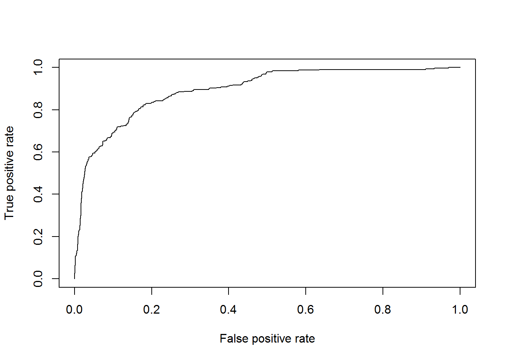
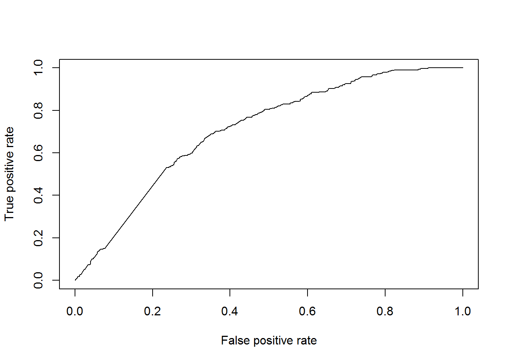
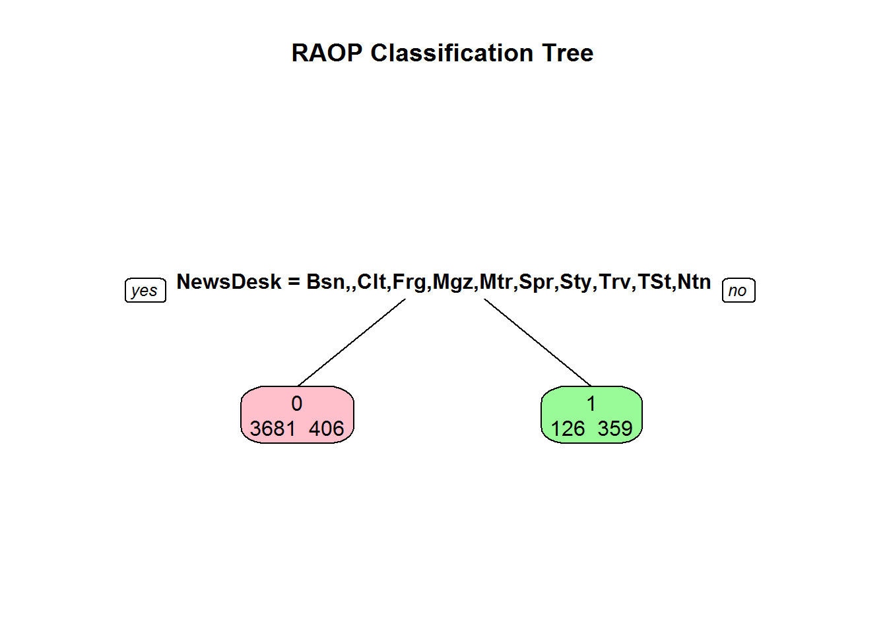
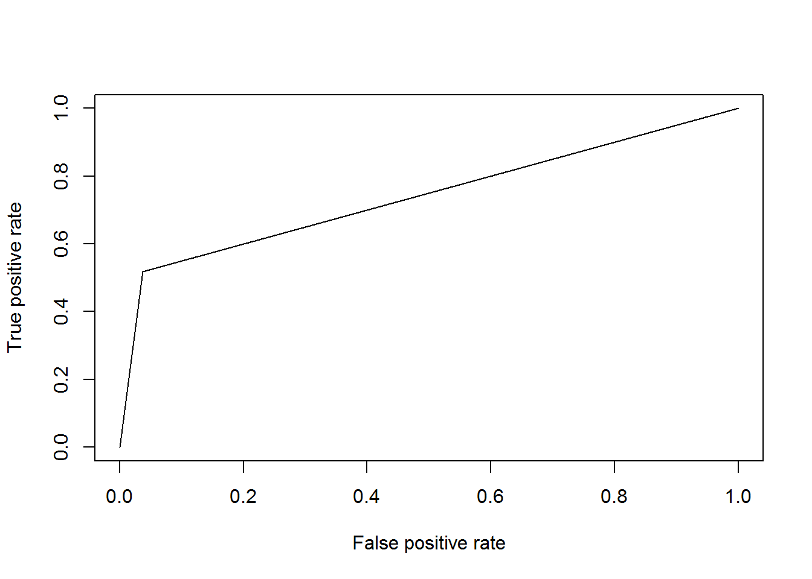
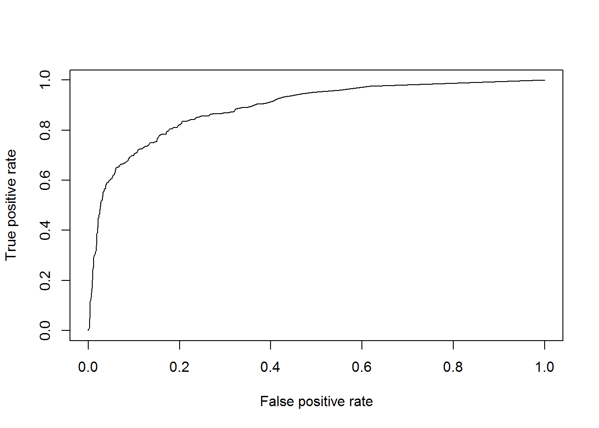

NY Time Blog Analysis
Ryan Kuhn
July 7, 2016
Setup the environment and load the data
library(tm)
library(rpart)
library(rpart.plot)
library(dplyr)
library(caTools)
library(ROCR)
library(caret)
library(randomForest)
library(gbm)
library(NYTimes)
data(trainingset)
data(testingset)
train<- trainingset
test <- testingsetData Cleaning
Setting factors
lvls<- c("Business","","Culture","Foreign", "Magazine","Metro","OpEd", "Science","Sports","Styles", "Travel","TStyle","National")
train$NewsDesk<- factor(train$NewsDesk, levels=lvls)
test$NewsDesk <- factor(test$NewsDesk, levels=lvls)
train$SectionName <- relevel(as.factor(train$SectionName),"Business Day")
train$SubsectionName<- relevel(as.factor(train$SubsectionName), "Dealbook")
test$SectionName <- factor(test$SectionName, levels=levels(train$SectionName))
test$SubsectionName<- factor(test$SubsectionName, levels=levels(train$SubsectionName))
train$PubDate<- as.POSIXct(train$PubDate,format= "%Y-%m-%e")
train$wkday <- relevel(as.factor(weekdays(train$PubDate)),"Friday")
test$PubDate<- as.POSIXct(test$PubDate,format="%Y-%m-%e")
test$wkday <- factor(weekdays(test$PubDate), levels=levels(train$wkday))Formatting headlines
Questions <- grep("?", train$Headline, fixed=T)
QnA <- grep("Q. and A.", train$Headline, fixed=T)
Gift <- grep("The Daily Gift", train$Headline, fixed=T)
Clip <- grep("Daily Clip Report", train$Headline, fixed=T)
Recap <- grep("Recap",train$Headline, fixed=T)
train$type <-"None"
train$type[QnA] <-"QnA"
train$type[Questions] <-"Question"
train$type[Gift] <-"Gift"
train$type[Clip] <-"Clip"
train$type[Recap] <-"Recap"
train$type<- factor(train$type, levels=c("None","Question","Gift","Clip","QnA","Recap"))
Questions <- grep("?", test$Headline, fixed=T)
QnA <- grep("Q. and A.", test$Headline, fixed=T)
Gift <- grep("The Daily Gift", test$Headline, fixed=T)
Clip <- grep("Daily Clip Report", test$Headline, fixed=T)
Recap <- grep("Recap",test$Headline, fixed=T)
test$type <-"None"
test$type[QnA] <-"QnA"
test$type[Questions] <-"Question"
test$type[Gift] <-"Gift"
test$type[Clip] <-"Clip"
test$type[Recap] <-"Recap"
test$type<- factor(test$type, levels=c("None","Question","Gift","Clip","QnA","Recap"))Modeling
Split the training dataset
split<- sample.split(train$Popular, SplitRatio=.7)
Ttrain<- subset(train, split==TRUE)
Ttest <- subset(train, split==FALSE)
rm(split)Baseline model
Ttrain %>%
group_by(Popular) %>%
select(Popular) %>%
summarise(N=n())
Base<-3807/nrow(Ttrain)
BasePred<-rep(Base,nrow(Ttest))
ROCRpred<-prediction(BasePred,Ttest$Popular)
ROCRperf<- performance(ROCRpred,"tpr","fpr")
plot(ROCRperf)## # A tibble: 2 × 2
## Popular N
## <int> <int>
## 1 0 3807
## 2 1 765Baseline percentage is 83% Base AUC score is is 0.5
Logistic Regression
LogMdl<- glm(Popular~.,data=Ttrain[,c(1,7,9,11,12)], family=binomial)
PredLog<-predict(LogMdl,newdata=Ttest[,c(1,7,9,11,12)],type="response")
ROCRpred<-prediction(PredLog,Ttest$Popular)
ROCRperf<- performance(ROCRpred,"tpr","fpr")
plot(ROCRperf)
AUC score is 0.901
Clustering
Except… clustering is doesn’t work for predictions. You’d have to do seperate models for each cluster.
Tcluster<-Ttrain[,c(1:3,9,11)]
Tcluster$time<-scale(Ttrain$WordCount)
Tdummies<-dummyVars(Popular~.,data=Tcluster)
Tdumb<-predict(Tdummies,newdata=Tcluster)
Dist<-dist(Tdumb,method="euclidean")
clusters<-hclust(Dist,method="ward.D")
plot(clusters, axes=F, labels=F)
clusterGroups<-cutree(clusters,k=3)
clusterGroups<-data.frame(clusters=matrix(clusterGroups,ncol=1))
clustdummies<-dummyVars(clusters~.,data=clusterGroups)
clusterGroupsdumb<-as.data.frame(predict(clustdummies,newdata=clusterGroups))Text Analytics
Prepare the training set
TrainCorpus<-Corpus(VectorSource(Ttrain$Abstract))
TrainCorpus<-tm_map(TrainCorpus,content_transformer(tolower))
TrainCorpus<-tm_map(TrainCorpus, PlainTextDocument)
TrainCorpus<-tm_map(TrainCorpus,removePunctuation)
TrainCorpus<-tm_map(TrainCorpus,stemDocument)
TrainCorpus<-tm_map(TrainCorpus,removeWords,
c("2015","about",
stopwords("english")))
dtmTrain<- DocumentTermMatrix(TrainCorpus)
sparseTrain<-removeSparseTerms(dtmTrain,0.98)
wordsTrain<-as.data.frame(inspect(sparseTrain))
Targets<-colnames(wordsTrain)
colnames(wordsTrain) = paste("A", colnames(wordsTrain),sep="")
TextTrain<-data.frame(wordsTrain,Ttrain$Popular, row.names=NULL)Prepare test set
TestCorpus<-Corpus(VectorSource(Ttest$Abstract))
TestCorpus<-tm_map(TestCorpus,content_transformer(tolower))
TestCorpus<-tm_map(TestCorpus, PlainTextDocument)
TestCorpus<-tm_map(TestCorpus,removePunctuation)
TestCorpus<-tm_map(TestCorpus,removeWords,stopwords("english"))
TestCorpus<-tm_map(TestCorpus,stemDocument)
dtmTest<- DocumentTermMatrix(TestCorpus)
wordsTest<-inspect(dtmTest[,colnames(dtmTest) %in% Targets])
colnames(wordsTest) = paste("A", colnames(wordsTest),sep="")
TextTest<-data.frame(wordsTest,Ttest$Popular,row.names=NULL)Prepare the model
TextLogMdl<-glm(Ttrain.Popular~.,data=TextTrain,family=binomial)
TextLogPred<- as.numeric(predict(TextLogMdl,newdata=TextTest,type="response"))
table(Ttest$Popular,TextLogPred>.5)
table(train$Popular)
ROCRpred<- prediction(TextLogPred,Ttest$Popular)
ROCRperf<- performance(ROCRpred,"tpr","fpr")
plot(ROCRperf)
AUC score is 0.706
Train CART
CART<- rpart(Popular~.,data=Ttrain[,c(1,7,9,11,12)],
method="class",
na.action=na.rpart,
control=rpart.control(xval=10,cp=0.05,minbucket=10))
CART<-prune(CART,cp=0.05)
prp(CART,
main= "RAOP Classification Tree",
extra=1,
box.col=c("pink","palegreen")[CART$frame$yval],
leaf.round=2)
CARTPred<- predict(CART,newdata=Ttest[,c(1,7,9,11,12)], type="prob")
ROCRpred<- prediction(CARTPred[,2],Ttest$Popular)
ROCRperf<- performance(ROCRpred,"tpr","fpr")
plot(ROCRperf)
AUC score is 0.734 and is not an improvement over the GLM model.
Train Random Forest
Forest<- randomForest(as.factor(Popular)~.,
data=Ttrain[,c(1,7,9,11,12)],
nodesize=5)
ForestPred<-predict(Forest,
newdata=Ttest[,c(1,7,9,11,12)],
type="prob",
metric="ROC")
ROCRpred<- prediction(ForestPred[,2],Ttest$Popular)
ROCRperf<- performance(ROCRpred,"tpr","fpr")
plot(ROCRperf)
ForestPred2<-predict(Forest,newdata=test[,c(1,7,10,11)], type="prob",metric="ROC")AUC score is 0.891 and is not an improvement over the GLM model.
Random Forest Using Text Analytics
TtrainComb<- data.frame(TextTrain, Ttrain[,c(1:3, 7:8,11:12)])
ForestComb<- randomForest(as.factor(Ttrain.Popular)~.,
data=TtrainComb,
nodesize=5)
TtestComb<- data.frame(TextTest, Ttest[,c(1:3,7:9,11:12)])
ForestPredComb<-predict(ForestComb,
newdata=TtestComb,
type="prob",
metric="ROC")
ROCRpred<- prediction(ForestPredComb[,2],Ttest$Popular)
ROCRperf<- performance(ROCRpred,"tpr","fpr")
plot(ROCRperf)AUC score is 0.942- best model yet!
Train ensembling
AUCs<-c(.8756,.7048,.7249,.8811,.9453)
Predictions<- data.frame(GLM=PredLog,
Text=TextLogPred,
CART=CARTPred[,2],
Forest=ForestPred[,2],
Comb=ForestPredComb[,2])
weights<-c(.20,.20,.20,.20,.20)
weightedPred<-Predictions*weights
Temp<- rowSums(weightedPred,na.rm=T)
ROCRpred<- prediction(Temp,Ttest$Popular)
ROCRperf<- performance(ROCRpred,"tpr","fpr")
plot(ROCRperf)
AUC score is 0.924
Test NLP
TestCorpus2<-Corpus(VectorSource(test$Abstract))
TestCorpus2<-tm_map(TestCorpus2, content_transformer(tolower))
TestCorpus2<-tm_map(TestCorpus2, PlainTextDocument)
TestCorpus2<-tm_map(TestCorpus2, removePunctuation)
TestCorpus2<-tm_map(TestCorpus2, removeWords,stopwords("english"))
TestCorpus2<-tm_map(TestCorpus2, stemDocument)
dtmTest2<- DocumentTermMatrix(TestCorpus2)
wordsTest2<-inspect(dtmTest2[,colnames(dtmTest2) %in% Targets])
colnames(wordsTest2) = paste("A", colnames(wordsTest2),sep="")
TextTest2<-data.frame(wordsTest2,row.names=NULL)Test Random Forest 2
TtestComb2<- data.frame(TextTest2, test[,c(1:3,7:8,10:11)])
# Test Predictions ----
PredLog2 <- predict(LogMdl,
newdata=test[,c(1,7,10,11)],
type="response")
TextLogPred2 <- as.numeric(predict(TextLogMdl,newdata=TextTest2,type="response"))
CARTPred2 <- predict(CART,
newdata=test[,c(1,7,10,11)],
type="prob")
ForestPred2 <- predict(Forest,
newdata=test[,c(1,7,10,11)],
type="prob",
metric="ROC")
ForestPredComb2 <- predict(ForestComb,
newdata=TtestComb2,
type="prob",
metric="ROC")Weight the Models
Predictions2<- data.frame(GLM=PredLog2,
Text=TextLogPred2,
CART=CARTPred2[,2],
Forest=ForestPred2[,2],
Comb=ForestPredComb2[,2])
weightedPred2<-Predictions2*weights
Temp2<- rowSums(weightedPred2,na.rm=T)
Submit2<-data.frame(UniqueID=test$UniqueID,Probability1=Temp2)
# Just RandomForestComn
Submit2<-data.frame(UniqueID=test$UniqueID,Probability1=ForestPredComb2[,2])